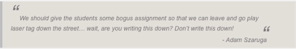

Welcome to
 DigitalCrafts Docs
DigitalCrafts Docs
INTRODUCTION
DigitalCrafts docs is yuor go to place for anything related to DigitalCrafts: Lextures, campus info, job search tips, personal development, bios, etc. You can scroll down to read all of this website, click on the navigation buttonson the left,or search for a specific topic using the search bar on the left. This website is a work in progress, so don't be surprised if all the text below this paragraph is gibberish.

MOTIVATION
Bacon ipsum dolor amet picanha venison shankle corned beef biltong fatback filet mignon, ham pork chop porchetta sirloin capicola cupim. Meatloaf corned beef boudin ribeye ham salami. Jowl turducken boudin buffalo porchetta short ribs. Sirloin tenderloin cow swine capicola, chuck meatloaf alcatra buffalo kevin sausage filet mignon pork beef landjaeger. Porchetta pancetta jowl, jerky shankle andouille picanha leberkas landjaeger. Alcatra shoulder pancetta, salami swine ham hock shank brisket strip steak tongue pastrami.
Drumstick strip steak turducken filet mignon. Shankle short loin pig leberkas strip steak ball tip prosciutto beef fatback ham salami ribeye andouille hamburger pork chop. Jowl shank kielbasa cow bresaola flank. Jowl chicken beef, pork jerky hamburger pork loin. Spare ribs strip steak cupim, alcatra ball tip sausage rump buffalo prosciutto pancetta jowl ham t-bone tri-tip porchetta. Shankle chuck short ribs, cow ham hock frankfurter boudin pork chicken shoulder pork belly prosciutto tail.
CAMPUS INFO
Bacon ipsum dolor amet picanha venison shankle corned beef biltong fatback filet mignon, ham pork chop porchetta sirloin capicola cupim. Meatloaf corned beef boudin ribeye ham salami. Jowl turducken boudin buffalo porchetta short ribs. Sirloin tenderloin cow swine capicola, chuck meatloaf alcatra buffalo kevin sausage filet mignon pork beef landjaeger. Porchetta pancetta jowl, jerky shankle andouille picanha leberkas landjaeger. Alcatra shoulder pancetta, salami swine ham hock shank brisket strip steak tongue pastrami.